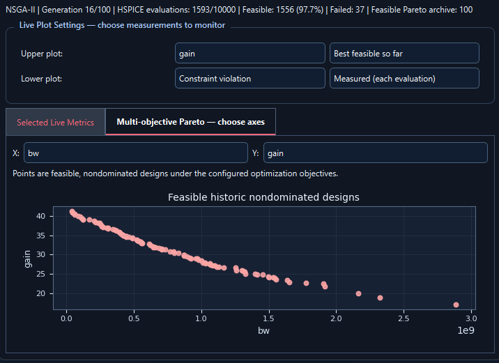

Active development
Simulation
Prepare a circuit and run simulations from one place.
- Netlist preparation
- Simulation runs
Independent analog / RF EDA project
Explore analog and RF design trade-offs in one workspace.
CIRCADRA is an independently developed workspace that brings simulation, optimization and result analysis into one connected workflow.

About the project
CIRCADRA simplifies the everyday workflow of analog and RF circuit development. It connects simulation, design exploration and result analysis, so each stage stays tied to the experiment that produced it.
Capabilities
Three areas cover the parts of design work that benefit most from automation. Select a segment to see what it covers.
Click a segment to explore
Prepare a circuit and run simulations from one place.
Explore competing design goals and compare the best candidates.
Check a chosen design against its layout constraints.
Workflow
Keep setup, simulation and results connected throughout an experiment.
Load a circuit and define what to design.
Set the goals and limits for the run.
Search for the best trade-offs.
Inspect the results and refine the design.
# Illustrative command sequence $ circadra run --project differential_amp ✓ Design workspace initialized ✓ Netlist loaded for review # Use Replay to view the sample workflow.
CIRCADRA aims to connect established tools rather than replace them.
People
Analog/RF design automation and CIRCADRA software development.
Academic guidance in circuit design, EDA and optimization.
CIRCADRA / Analog & RF EDA
An engineering-oriented workspace taking shape one verified capability at a time.